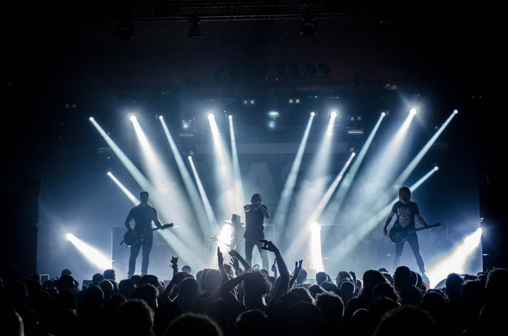
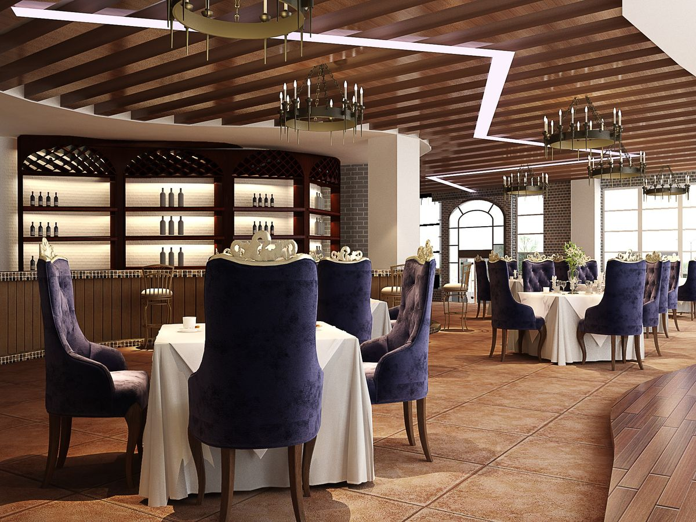

موسیقی زنده و دیجی
هر شب از ساعت ۸ تا ۱۲، دیجی و موسیقی زنده؛ سلاطین تنها رستوران فرمانیه با برنامه دیجی هر شب است.
کافه رستوران سلاطین، پاتوق شبانه فرمانیه است — موسیقی زنده و دیجی هر شب، منوی کامل ایرانی و فرنگی و فضایی جوانپسند که تا ۳ بامداد باز است. میزتان را همین حالا آنلاین رزرو کنید.

سلاطین فقط یک کافه نیست؛ منوی کامل رستوران، بار نوشیدنی و برنامه شبانه، همه در یک فضای بزرگ و پرانرژی در فرمانیه.

هر شب از ساعت ۸ تا ۱۲، دیجی و موسیقی زنده؛ سلاطین تنها رستوران فرمانیه با برنامه دیجی هر شب است.

از غذاهای ایرانی تا استیک، پاستا، برگر و غذای دریایی؛ منویی که برای هر سلیقهای در جمع شما انتخاب دارد.

نوشیدنیهای سرد و گرم، کیک، شیرینی، شیک و بستنی؛ برای عصرهایی که فقط به یک نوشیدنی خوب نیاز دارید.

قلیانهای برند هوکا در فضای کافه سرو میشود؛ همراه با چای و نوشیدنیهای مخصوص سلاطین.

سلاطین در فرمانیه غربی، با سالها سابقه و فضایی بزرگ، برای دورهمیهای دوستانه و شبنشینی ساخته شده است؛ جایی که برنامه شب، از خود غذا شروع میشود.
دیجی و موسیقی زنده هر شب برقرار است؛ برای تولد و دورهمی، از قبل رزرو کنید.
یکی از معدود کافه رستورانهای شمال تهران که تا ۳ بامداد پذیرای مهمان است.
غذای ایرانی و فرنگی، استیک و پاستا، دریایی، دسر و نوشیدنی؛ همه در یک منو.
صفحه اینستاگرام ما @salatinrestaurant با بیش از ۱۶ هزار دنبالکننده، برنامه شبها و منو را بهروز منتشر میکند.
نور گرم، موسیقی زنده و میزهایی که تا نیمهشب پر میمانند.





در فرم رزرو، روز و ساعت، تعداد نفرات و فضای موردنظرتان را مشخص کنید.
برای تأیید روز و ساعت رزرو، با شمارهای که ثبت کردهاید تماس میگیریم.
به فرمانیه غربی، خیابان لواسانی بیایید؛ میزتان آماده است.
تهران، فرمانیه غربی، خیابان لواسانی، روبروی خیابان آقایی، جنب بانک سپه، پلاک ۱۳۰.
هر روز از ظهر تا ۳ بامداد.
هر شب؛ برنامه دیجی و موسیقی زنده از ساعت ۸ شب تا نیمهشب برقرار است.
بله؛ قلیانهای برند هوکا در فضای کافه سرو میشود.
فرم رزرو همین صفحه را پر کنید یا با شماره ۰۲۱۲۲۲۱۰۷۰۰ تماس بگیرید.
فرم را پر کنید؛ برای تأیید روز و ساعت رزرو با شما تماس میگیریم. اگر ترجیح میدهید مستقیم صحبت کنیم، تماس بگیرید:
۰۲۱ - ۲۲۲۱۰۷۰۰ اینستاگرام: @salatinrestaurant